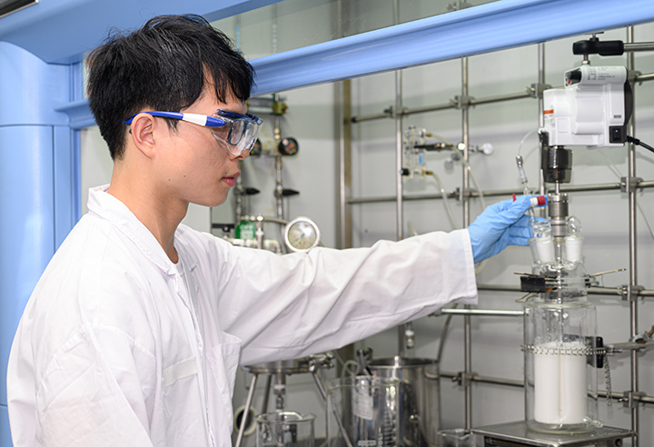
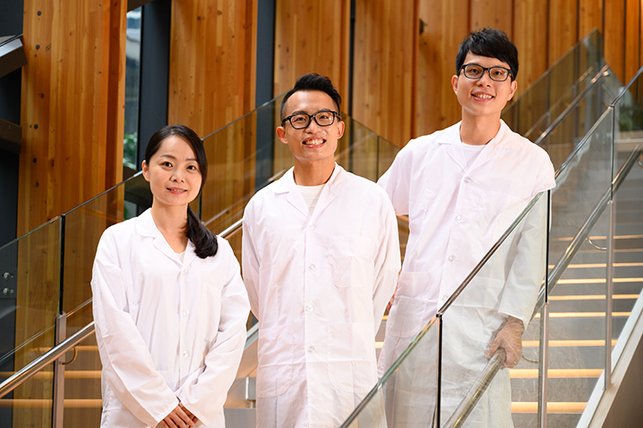
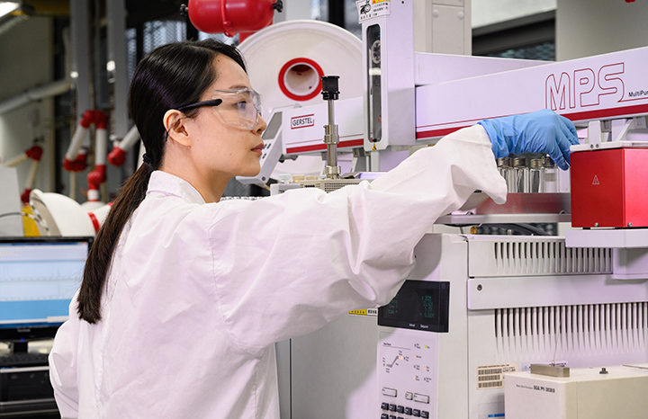
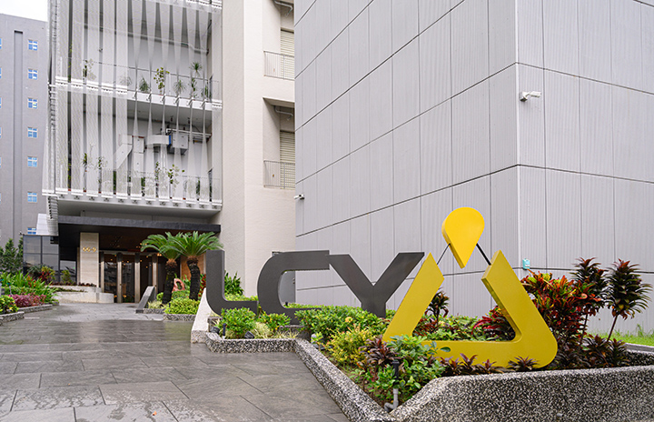

李長榮化工不斷提出令外界眼睛為之一亮的科學創新，背後靠的正是一批由國際頂尖人才的研發部隊，以及一座匯聚創新能量的楠梓研發中心。研發團隊在這落實創新又創業的精神，透過結合市場趨勢的創意發想，並實際於市場落地與進入專利申請，拼出外界不可小覷的競爭力。
全世界最具影響力的科技巨擘，如亞馬遜、谷歌、微軟、臉書、蘋果、三星等，都具備的共通點是——強大的創新力，令競爭對手相形見絀。如今，在台灣，護國神山化工部隊之一的李長榮化工，也已透過台灣首個且唯一的EIPA（電子級異丙醇）循環回收技術等技術，再一次向外界證明難以被小覷的創新實力，這背後靠著的就是——位於高雄楠梓的李長榮化工研發中心，定位為「循環創新基地」的研發中心，與其頂尖國際團隊，匯聚來自台灣、加拿大、香港、日本等國際化工名校的碩博士菁英，合作推出國際級產品。
創意發想平台鼓勵創意 從0到1打造新產品
「現在有三到四成的專案都是源自創意發想平台。」李長榮化工總經理劉文龍胸有成竹地說，李長榮化工啟動「創意發想平台」後，每一季大概都有五至六個研發團隊參加，如果想法通過創新平台認證技術與市場可行，會再往專利或者營業秘密發展，公司內部也會發創意獎金，獎勵同事的優秀創意。
參與過創意發想平台的研究員李世偉，分享自己工作時的實戰經驗，「我所負責的CPI（透明聚醯亞胺Colorless Polyimide）專案，它可以讓螢幕有更高畫質的呈現，為了保證產品穩定性，我自己光是配方組合就試了100多組，整個團隊大概試了500組，整個過程就是不斷地嘗試、試錯，還有優化。」透過不斷的嘗試、落地到產品研發實踐，一連串的過程是挑戰，但也同樣充滿創新與樂趣！
 許多李長榮的商機，創意的發想都是源自於創意發想平台｜李長榮化工研究員歐陽嘉駿來自香港，他曾參與過今年初的創意發想平台，「我利用聚丙烯和改良過的纖維素做成新的材料，應用於服裝布料上，可以使材質變輕，並達到保暖、防水的作用，而且可以循環再利用。」後續同事們提出其他材料也有機會把衣服變得更輕、更暖，啟發歐陽嘉駿另一個想像的可能。
歐陽嘉駿補充，李長榮研發團隊有一線國際名校、不同領域的專家，有法國巴黎的高科礦業大學、北海道大學、香港科技大學、台灣大學、台灣中研院、工研院等，遇到難題時可以隨時跟身邊同事請益，透過知識交流提升研發團隊創新戰力。
 李長榮化工廣納多元國際化人才，希望能透過創意激盪，鼓勵更多革命性突破｜李長榮化工聚焦產業大趨勢 提供合作夥伴綠色解決方案
李長榮研發中心聚焦的主題也緊跟著全世界的趨勢脈動。「我們關注全球大趨勢(mega trend)，包括綠色循環，智慧生活，以及節能輕量化材料。」劉文龍指出，李長榮三大主題與人類文明生活高度結合，同時接軌國際市場的發展趨勢，聚焦於高階半導體製程、電子消費品、民生用品、汽車工業等關鍵領域的減碳解決方案，締造多項成功案例。
李長榮所供應的電子級異丙醇(EIPA)，是業界首創雙循環經濟模式，透過高階創新技術完全回收製程中產生的異丙醇廢液，可以幫助半導體產業減碳減廢。李長榮化工研發中心分析實驗室研究員黃瓊瑤分享，「我們的工作是非常有意義的，專案小組持續將EIPA推向更高品質，最終目標幫半導體客戶解決廢棄物問題，每一位研究員與工程師提供都是護國神山背後的重要推手。」她補充，專案小組成員涵蓋事業部、研發處、到製造基地，透過跨部門、跨領域專家的共同合作，可以有不同觀點的刺激，加速研究到實際落地，也幫助半導體客戶實現資源永續的願景。
 研發中心不只是孵化技術，也孵化生意，最重要是孵化人才｜李長榮化工李長榮在創新研發投注高度動能，拉高設備投資將楠梓研發中心打造成為具有國際水準的創新基地，同時更深耕研發人才培育，「我們培養研究員的市場敏銳度，研發中心不只是孵化技術，也孵化生意，最重要是孵化人才。」劉文龍強調，將以循環材料創新基地作為李長榮的競爭力核心，致力持續提供資源永續的解決方案。
 循環材料創新基地作為李長榮的成長引擎，致力持續提供資源永續的解決方案｜李長榮化工